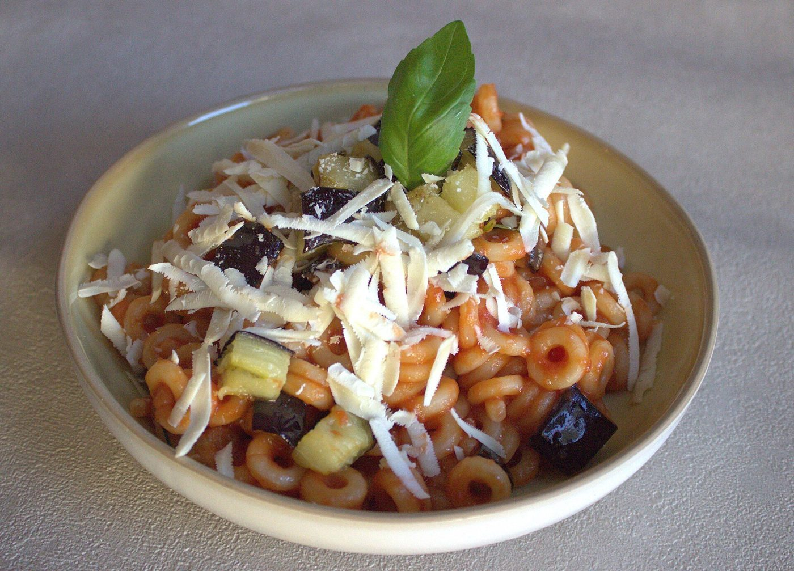

⑥ ペダル ─ 足をのせる板
メニュー準備中
品書き・価格は準備中です。確定した情報はありません。ペダルの踏み面になぞらえ、掲載枠だけを用意しました。
写真帯 ─ イメージ



- 1品書き枠準備中
- 2品書き枠準備中
- 3品書き枠準備中
- 4品書き枠準備中
- 5品書き枠準備中
- 6品書き枠準備中
写真帯 ─ イメージ


⑥ ペダル ─ 足をのせる板
品書き・価格は準備中です。確定した情報はありません。ペダルの踏み面になぞらえ、掲載枠だけを用意しました。
写真帯 ─ イメージ

写真帯 ─ イメージ